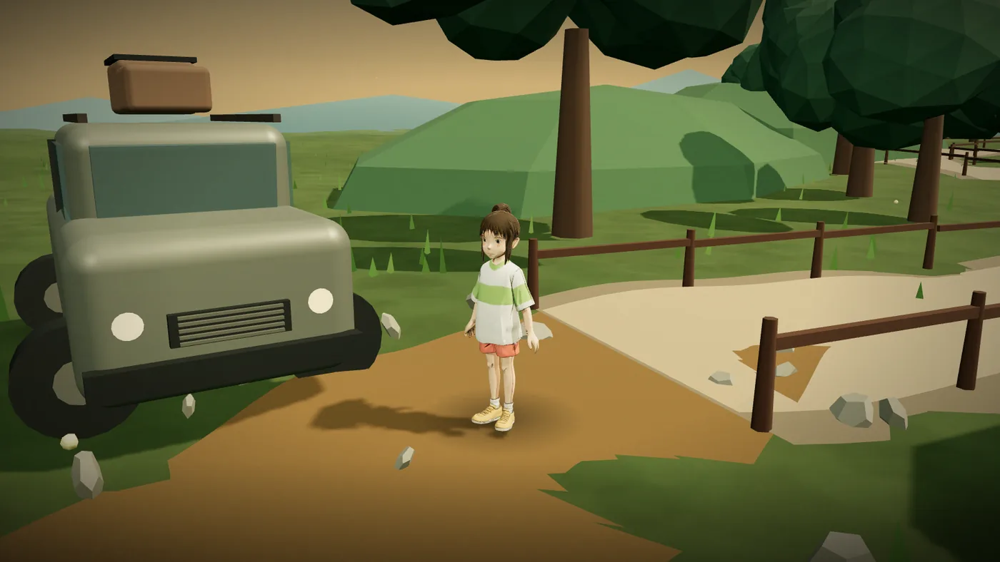
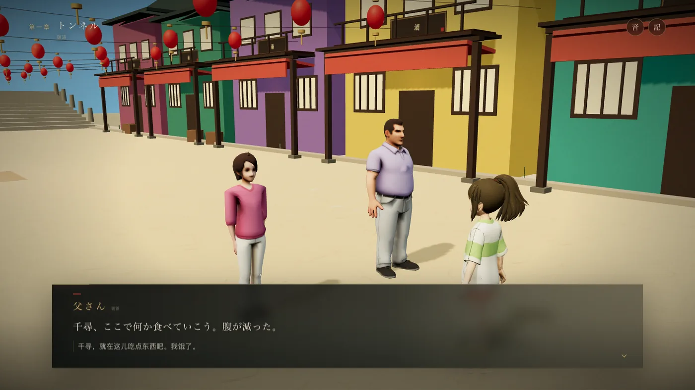
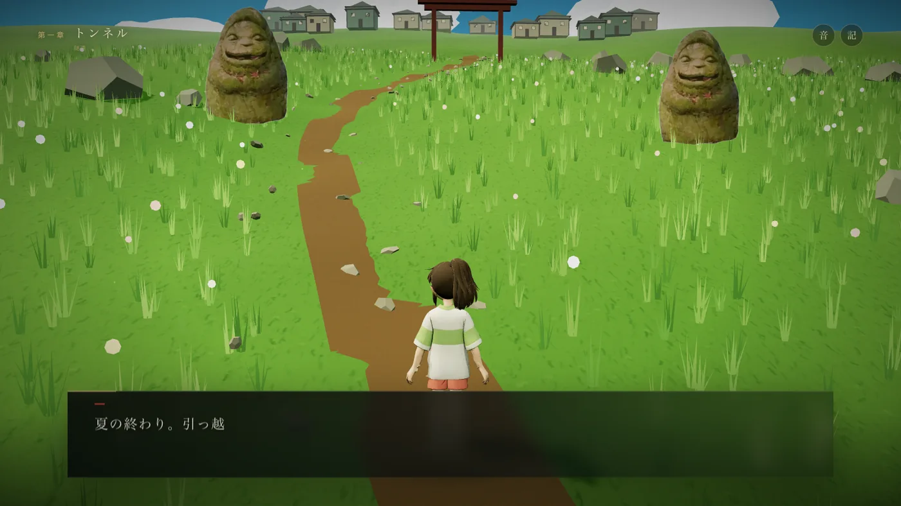
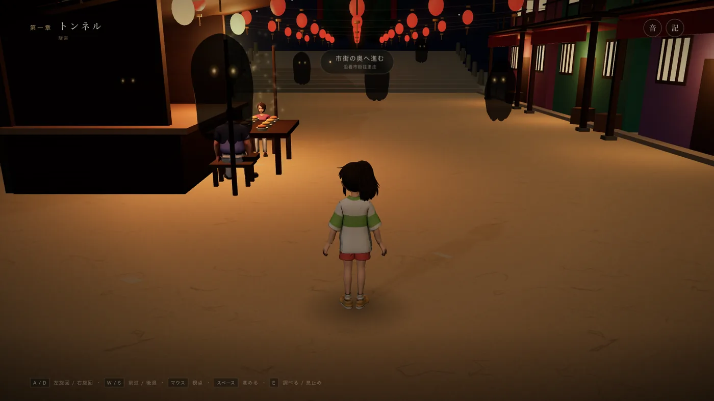
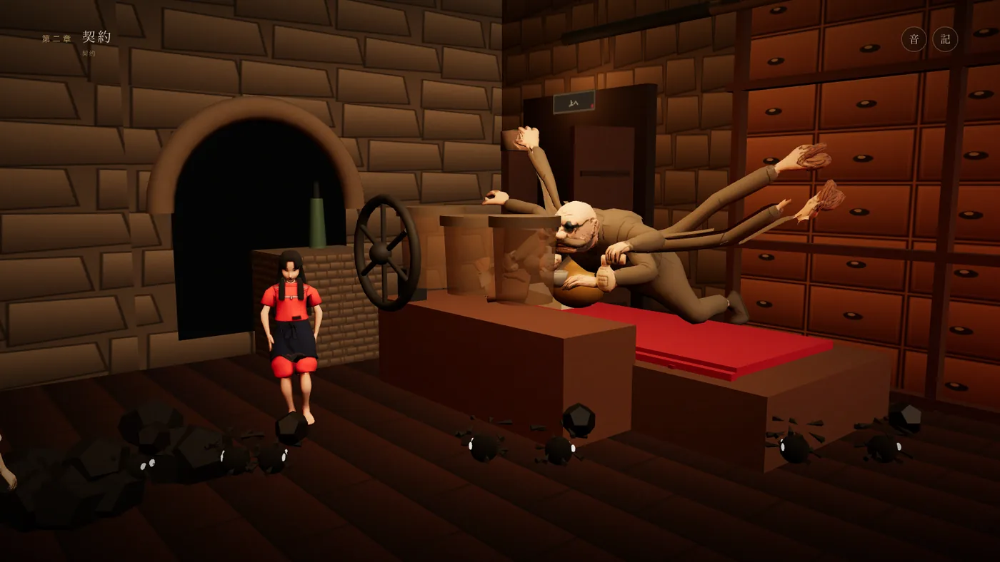
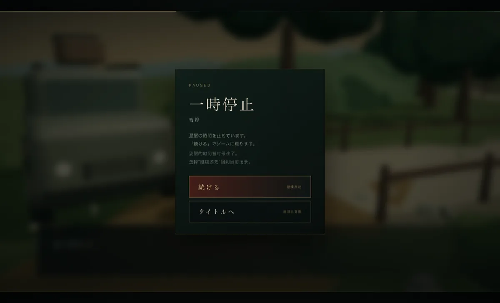
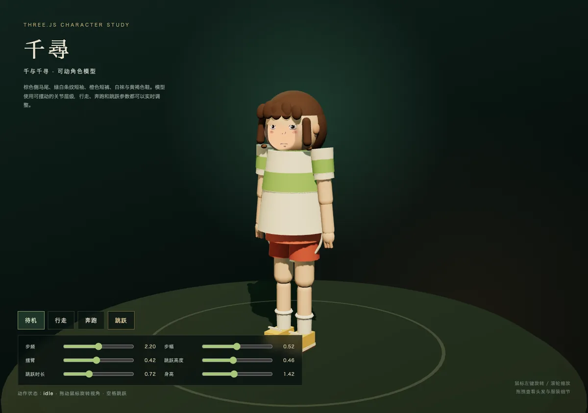

CHAPTER 01
隧道 トンネル
旧门楼、风中的草原、横穿草地的小溪、无人的旧市集。石段上，白龙第一次说出名字的代价。
A FAN-MADE INTERACTIVE JOURNEY
千与千寻 · 3D 互动叙事
穿过旧门楼，走过无人的市集，在汤屋的长桥上屏住呼吸。
一个关于名字、记忆与归途的低多边形 3D 旅程。
十岁的千寻与父母误入一条地图上不存在的土路。旧门楼后是空无一人的市集、摆满食物的摊位，以及一座在暮色中亮起灯笼的汤屋。
父母变成了猪。名字即将被夺走。她必须找到锅炉爷爷，找到工作，也找到回去的路。
NOW IN DEVELOPMENT 第一章、第二章现已可玩 · 后续章节敬请期待
非官方、非商业的同人作品。原作、影像与角色版权归各自权利人所有。
从白天的草地到夜晚的汤屋，每一章都有独立的场景、对白与目标。

旧门楼、风中的草原、横穿草地的小溪、无人的旧市集。石段上，白龙第一次说出名字的代价。

白龙在桥边等候。屏住呼吸过桥，穿过锅炉房与运煤的煤球精灵，最后站到汤婆婆的桌前。
低多边形的体积、黄昏的光、黑布幽灵与一碗碗还没有人动过的饭。





无需安装，直接在浏览器中进入第一章。也可以把仓库克隆到本地运行完整项目；模型、场景和音频都从静态资源加载。
$ git clone https://github.com/lilu1814/qianxun.git
$ cd qianxun
$ pnpm install
$ pnpm dev
# open http://127.0.0.1:4173/
# character demo: /chihiro-model.html自分の名前を忘れないで。
不要忘记自己的名字。
进入 GitHub 仓库